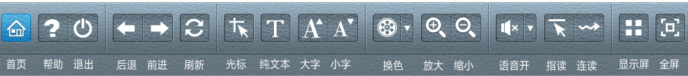
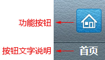
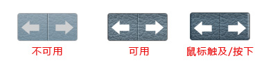

操作界面及功能介绍
了解信息无障碍辅助系统操作界面功能布局以及界面各个区域的所表示的意义。
初始界面

上图为初始界面样式。无障碍操作面板功能分为如下区域：
系统操作功能区1，包括首页、 帮助、退出等功能
系统操作功能区2，包括后退、前进、刷新等功能；
浏览基础功能区3，包括光标辅助、纯文本、 字体放大缩小功能
视力辅助功能区4，页面换色、页面放大缩小功能
视力辅助功能区5,包括朗读功能开关、音量调节、语速调节、朗读模式功能
朗读功能区6，包括显示屏开关、全屏页面功能
功能样式说明
信息无障碍辅助系统界面的功能以便于理解的图标按钮形式存在，并在对应图标下方标注功能文字说明：

操作界面的按钮用直观的不同状态样式来区分不可用、可用、触摸、已开启等不同状态：
